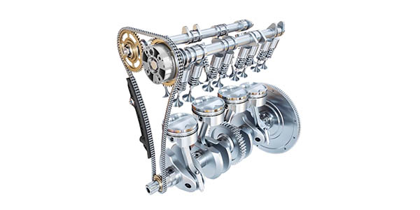

בפרק המנוע נגענו בכך שגלי הזיזים מקבלים את התנועה שלהם מהקראנק, הפרק נבין איך בדיוק זה קורה:
על ציר הקראנק יושב גלגל שיניים, הגלגל"ש הזה מסתובב יחד עם הקראנק. על הגלגל"ש הזה יושבת שרשרת שהולכת מעלה לראש המנוע, השרשרת הזו מסובבת איתה שני גלגלי שיניים בחלקו העליון של המנוע מעל השסתומים. לכל אחד מגלגלי שיניים האלה שבראש המנוע מחובר ציר שמסתובב יחד איתו, על הציר הזה יושבות אותן אליפסות שהן גלי הזיזים (הקמשאפטים). וכך הקמשאפטים מסתובבים יחד עם הציר ובכל פעם שהחלק המחודד שלהם פוגש את קפיץ השסתום, הוא דוחף את השסתום מטה ופותח אותו.
כך זה קורה לפי הסדר:
- גלגל"ש שיושב על ציר הקראנק מניע את שרשרת הטיימינג
- שרשרת הטיימינג מניעה את גלגלי השיניים של צירי הקמשאפטים
- גלגלי השיניים מניעים את הציר ואיתו את הקמשאפטים
- הקמשאפטים מסתובבים ובכל סיבוב דוחפים את השסתומים למטה ופותחים אותם פעם אחת
וככה זה נראה:

ברוב הרכבים כיום במקום שרשרת טיימינג יש רצועת גומי, כשמדובר ברצועה מומלץ להחליף אותה בין כל 60,000 ל120,000 ק"מ או 3-5 שנים.
מערכת הטיימינג יכולה לעבוד אחרת ולהכיל מנגנונים שונים בין רכבים שונים אבל העיקרון הוא אחד: הקראנק מניע (דרך רצועה או שרשרת) את הצירים של הקמשאפטים, הקמשאפטים פותחים וסוגרים את השסתומים ע"י דחיפת הקפיצים למטה, וככה כל עוד הקראנק מסתובב השסתומים ממשיכים להיסגר ולהיפתח בתזמון המושלם, וכל עוד השסתומים ממשיכים להיפתח ולהיסגר הבוכנה ממשיכה לעלות ולרדת והקראנק ממשיך להסתובב.